Extended Reality / Augmented Reality / Virtual Reality (XR/AR/VR)
What is Extended Reality (XR)?
Extended Reality (XR) is a collective term encompassing Augmented Reality (AR) and Virtual Reality (VR), technologies that transform our interaction with the world by either enhancing or completely reimagining our perception of reality.
Utilizing advancements in computer graphics, sensors, cameras, and displays, XR creates immersive experiences that range from overlaying digital information onto our physical surroundings in AR, to immersing users in entirely digital environments in VR. XR represents a significant shift in how we engage with and perceive digital content, offering intuitive and natural interfaces for a wide range of applications in various sectors, including democracy, human rights, and governance.
What is Virtual Reality (VR)?
Virtual Reality (VR) is a technology that immerses users in a simulated three-dimensional (3D) environment, allowing them to interact with it in a way that simulates real-world experiences, engaging senses like sight, hearing, and touch. Unlike traditional user interfaces, VR places the user inside an experience. Instead of viewing a screen in front of them, users are immersed and able to interact with 3D worlds.
VR uses a specialized headset, known as a VR Head Mounted Display (HMD), to create a 3D, computer-generated world that fully encompasses your vision and hearing. This immersive technology not only visualizes but also enables interaction through hand controllers. These controllers provide haptic feedback, a feature that simulates the sense of touch, enhancing the realism of the virtual experience. VR’s most notable application is in immersive gaming, where it allows players to fully engage in complex fantasy worlds.
What is Augmented Reality (AR)?
Augmented Reality (AR) is a technology that overlays digital information and objects onto the real world, enhancing what we see, hear, and feel. For instance, it can be used as a tourist application to help a user find her way through an unfamiliar city and identify restaurants, hotels, and sights. Rather than immersing the user in an imaginary or distant virtual world, the physical world is enhanced by augmenting it in real time with digital information and entities.
AR became widely popular in 2016 with the game Pokémon Go, in which players found virtual characters in real locations, and Snapchat, which adds playful filters like funny glasses to users’ faces. AR is used in more practical applications as well such as aiding surgeries, enhancing car displays, and visualizing furniture in homes. Its seamless integration with the real world and focus on enhancing, rather than replacing reality, positions AR as a potential key player in future web and metaverse technologies, replacing traditional computing interfaces like phones and desktops by accurately blending real and virtual elements in real time.
What is Mixed Reality (MR)?
Mixed Reality (MR) is a technology that merges real-world and digital elements. It combines elements of Virtual Reality (VR), which creates a completely computer-generated environment, with Augmented Reality (AR), which overlays digital information onto the real world. In MR, users can seamlessly interact with both real and virtual objects in real time. Digital objects in MR are designed to respond to real-world conditions like light and sound, making them appear more realistic and integrated into our physical environment. Unlike VR, MR does not fully replace the real world with a digital one; instead, it enhances your real-world experience by adding digital elements, providing a more interactive and immersive experience.
MR has diverse applications, such as guiding surgeons in minimally invasive procedures using interactive 3D images and models through MR headsets. MR devices are envisioned as versatile tools poised to deliver value across multiple domains.
What is the Metaverse?
The Metaverse, a term first coined in the 1992 novel “Snow Crash,” is an immersive, interconnected virtual world in which people use avatars to interact with each other and digital environments via the internet. It blends the physical and digital realms using Extended Reality (XR) technologies like AR and VR, creating a space for diverse interactions and community building. Gaining traction through advancements in technology and investments from major companies, the Metaverse offers a platform that mirrors real-world experiences in a digitally enhanced environment, allowing simultaneous connections among numerous users.
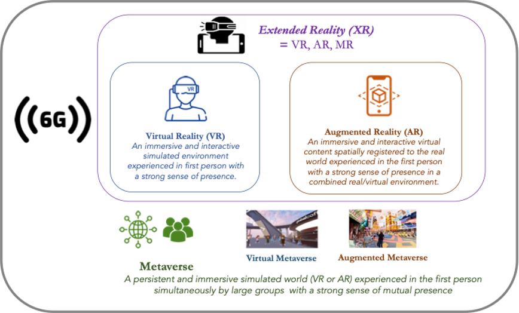
A metaverse can span the spectrum of virtuality and may incorporate a “virtual metaverse” or an “augmented metaverse” as shown above. Features of this technology range from employing avatars within virtual realms to utilizing smartphones for accessing metaverse environments, and from wearing AR glasses that superimpose computer-generated visuals onto reality, to experiencing MR scenarios that flawlessly blend elements from both the physical and virtual domains.
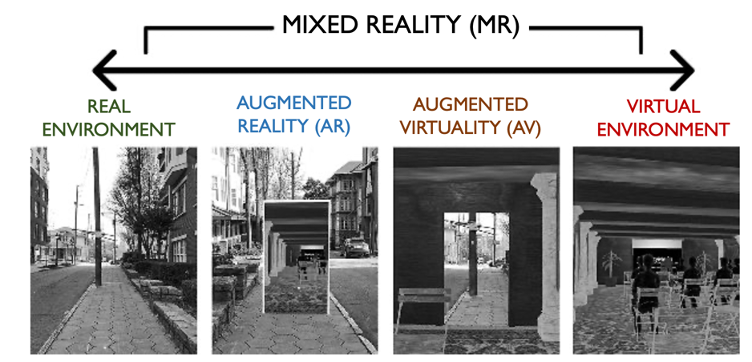
How is AR/VR relevant in civic space and for democracy?
In the rapidly evolving landscape of technology, the potential of AR/VR stands out, especially in its relevance to democracy, human rights, and governance (DRG). These technologies are not just futuristic concepts; they are tools that can reshape how we interact with the world and with each other, making them vital for the DRG community.
At the forefront is the power of AR/VR to transform democratic participation. These technologies can create immersive and interactive platforms that bring the democratic process into the digital age. Imagine participating in a virtual town hall from your living room, debating policies with avatars of people from around the world. This is not just about convenience; it’s about enhancing engagement, making participation in governance accessible to all, irrespective of geographic or physical limitations.
Moreover, AR/VR technologies offer a unique opportunity to give voice to marginalized communities. Through immersive experiences, people can gain a visceral understanding of the challenges faced by others, fostering empathy and breaking down barriers. For instance, VR experiences that simulate the life of someone living in a conflict zone or struggling with poverty can be powerful tools in human rights advocacy, making abstract issues concrete and urgent.
Another significant aspect is the global collaboration facilitated by AR/VR. These technologies enable DRG professionals to connect, share experiences, and learn from each other across borders. Such collaboration is essential in a world where human rights and democratic values are increasingly interdependent. The global exchange of ideas and best practices can lead to more robust and resilient strategies in promoting democracy and governance.
The potential of AR/VR in advocacy and awareness is significant. Traditional methods of raising awareness about human rights issues can be complemented and enhanced by the immersive nature of these technologies. They bring a new dimension to storytelling, allowing people to experience rather than just observe. This could be a game-changer in how we mobilize support for causes and educate the public about critical issues.
However, navigating the digital frontier of AR/VR technology calls for a vigilant approach to data privacy, security, and equitable access, recognizing these as not only technical challenges but also human rights and ethical governance concerns.
The complexity of governing these technologies necessitates the involvement of elected governments and representatives to address systemic risks, foster shared responsibility, and protect vulnerable populations. This governance extends beyond government oversight, requiring the engagement of a wide range of stakeholders, including industry experts and civil society, to ensure fair and inclusive management. The debate over governance approaches ranges from advocating government regulation to protect society, to promoting self-regulation for responsible innovation. A potentially effective middle ground is co-regulation, where governments, industry, and relevant stakeholders collaborate to develop and enforce rules. This balanced strategy is crucial for ensuring the ethical and impactful use of AR/VR in enhancing democratic engagement and upholding human rights.
Opportunities
AR/VR offers a diverse array of applications in the realms of democracy, human rights, and governance. The following section delves into various opportunities that AR/VR technology brings to civic and democracy work.
Augmented DemocracyDemocracy is much more than just elections and governance by elected people. A fully functional democracy is characterized by citizen participation in the public space; participatory governance; freedom of speech and opportunities; access to information; due legal process and enforcement of justice; protection from abuse by the powerful, etc. Chilean physicist César Hidalgo, formerly director of the MIT Collective Learning group at MIT Media Lab, has worked on an ambitious project that he called “Augmented Democracy.” Augmented Democracy banks on the idea of using technology such as AR/VR, along with other digital tools, including AI and digital twins, to expand the ability of people to participate directly in a large volume of democratic decisions. Citizens can be represented in the virtual world by a digital twin, an avatar, or a software agent. Through such technology, humans can participate more fully in all of the public policy issues in a scalable, convenient fashion. Hidalgo asserts that democracy can be enhanced and augmented using technology to automate several of the tasks of governments and in the future, politicians and citizens will be supported by algorithms and specialist teams, fostering a collective intelligence that serves the people more effectively.
Using AR/VR, enhanced opportunities to participate in governance become available. When used in conjunction with other technologies such as AI, participatory governance becomes feasible at scale in which the voice of citizens and their representatives is incorporated into all of the decisions pertaining to public policy and welfare. However, “a participatory public space” is only one possibility. As we shall see later in the Risks section, we cannot ascribe outcomes to technology deterministically because the intent and purpose of deployment matters a lot. If due care is not exercised, the use of technology in public spaces may result in other less desirable scenarios such as “autocratic augmented reality” or “big-tech monopoly” (Gudowsky et al.). On the other hand, a well-structured metaverse could enable greater democratic participation and may offer citizens new ways to engage in civic affairs with AR/VR, leading to more inclusive governance. For instance, virtual town hall meetings, debates, and community forums could bring together people from diverse backgrounds, overcoming geographical barriers and promoting democratic discussions. AR/VR could facilitate virtual protests and demonstrations, providing a safe platform for expression in regions where physical gatherings might be restricted.
Perhaps the most well-known applications of AR/VR in the civic space pertain to the healthcare and education industries. The benefit of AR/VR for healthcare is well-established and replicated through multiple scientific studies. Even skeptics, typically doubtful of AR/VR/metaverse technology’s wider benefits, acknowledge its proven effectiveness in healthcare, as noted by experts like Bolter et al. (2021) and Bailenson (2018). These technologies have shown promise in areas such as therapeutics, mental therapy, emotional support, and specifically in exposure therapy for phobias and managing stress and anxiety. Illustrating this, Garcia-Palacios et al. (2002) demonstrated the successful use of VR in treating spider phobia through a controlled study, further validating the technology’s therapeutic potential.
Along with healthcare, education and training provide the most compelling use cases of immersive technologies such as AR/VR. The primary value of AR/VR is that it provides a unique first-person immersive experience that can enhance human perception and educate or train learners in the relevant environment. Thus, with AR/VR, education is not reading about a situation or watching it, but being present in that situation. Such training can be useful in a wide variety of fields. For instance, Boeing presented results of a study that suggested that training performed through AR enabled workers to be more productive and assemble plane wings much faster than when instructions were provided using traditional methods. Such training has also been shown to be effective in diversity training, where empathy can be engendered through immersive experiences.
AR/VR technology allows for the creation of interactive environments that can be customized to meet the needs of individuals with various abilities and disabilities. For example, virtual public spaces can be adapted for those with visual impairments by focusing on other senses, using haptic (touch-based) or audio interfaces for enhanced engagement. People who are colorblind can benefit from a ‘colorblind mode’ – a feature already present in many AR/VR applications and games, which adjusts colors to make them distinguishable. Additionally, individuals who need alternative communication methods can utilize text-to-speech features, even choosing a unique voice for their digital avatars. Beyond these adaptations, AR/VR technologies can help promote workplace equity, through offering people with physical disabilities equal access to experiences and opportunities that might otherwise be inaccessible, leveling the playing field in both social and professional settings.
AR/VR presents a powerful usability feature through which users can experience what it is like to be in the shoes of someone else. Such perspective-enhancing use of AR/VR can be used to increase empathy and promote awareness of others’ circumstances. VR expert Jeremy Bailenson and his team at Stanford Virtual Human Interaction Lab have worked on VR for behavior change and have created numerous first-person VR experiences to highlight social problems such as racism, sexism, and other forms of discrimination (see some examples in Case Studies). In the future, using technology in real time with AR/VR-enabled, wearable and broadband wireless communication, one may be able to walk a proverbial mile in someone else’s shoes in real time, raising greater awareness of the difficulties faced by others. Such VR use can help in removing biases and in making progress on issues such as poverty and discrimination.
AR/VR technologies offer a unique form of empowerment for marginalized communities, providing a virtual space for self-expression and authentic interaction. These platforms enable users to create avatars and environments that truly reflect their identities, free from societal constraints. This digital realm fosters social development and offers a safe space for communities often isolated in the physical world. By connecting these individuals with broader networks, AR/VR facilitates access to educational and support resources that promote individual and communal growth. Additionally, AR/VR serves as a digital archive for diverse cultures and traditions, aiding in the preservation and celebration of cultural diversity. As highlighted in Jeremy Bailenson’s “Experience on Demand,” these technologies also provide therapeutic benefits, offering emotional support to those affected by trauma. Through virtual experiences, individuals can revisit cherished memories or envision hopeful futures, underscoring the technology’s role in emotional healing and psychological wellbeing.
Virtual reality, unlike traditional media, does not provide merely a mediated experience. When it is done well, explains Jeremy Bailenson, it is an actual experience. Therefore, VR can be the agent of long-lasting behavior change and can be more engaging and persuasive than other types of traditional media. This makes AR/VR ideally suited for virtual activism, which seeks to bring actual changes to the life of marginalized communities. For instance, VR has been used by UN Virtual Reality to provide a new lens on an existing migrant crisis; create awareness around climate change; and engender humanitarian empathy. Some examples are elaborated upon in the Case Studies.
AR/VR and the metaverse could enable new, more sustainable economic models. Decentralized systems like blockchain technology can be used to support digital ownership of virtual assets, and empower the disenfranchised economically, and to challenge traditional, centralized power structures. Furthermore, since AR/VR and the metaverse promise to be the next evolution of the Internet – which is more immersive, and multi-sensory, individuals may be able to participate in various activities and experiences virtually. This could reduce the need for physical travel and infrastructure, resulting in more economical and sustainable living, reducing carbon footprints, and mitigating climate change.
Risks
The use of AR/VR in democracy, human rights, and governance work carries various risks. The following sections will explore these risks in a little more detail. They will also provide strategies on how to mitigate these risks effectively.
Limited applications and InclusivenessFor AR/VR technologies to be effectively and inclusively used in democratic and other applications, it is essential to overcome several key challenges. Currently, these technologies fall short in areas like advanced tactile feedback, comprehensive sign language support, and broad accessibility for various disabilities. To truly have a global impact, AR/VR must adapt to diverse communication methods, including visual, verbal, and tactile approaches, and cater to an array of languages, from spoken to sign. They should also be designed to support different cognitive abilities and neurodiversity, in line with the principles set by the IEEE Global Initiative on Ethics of Extended Reality. There is a pressing need for content to be culturally and linguistically localized as well, along with the development of relevant skills, making AR/VR applications more applicable and beneficial across various cultural and linguistic contexts.
Furthermore, access to AR/VR technologies and the broader metaverse and XR ecosystem is critically dependent on advanced digital infrastructure, such as strong internet connectivity, high-performance computing systems, and specialized equipment. As noted by Matthew Ball in his 2022 analysis, significant improvements in computational efficiency are necessary to make these technologies widely accessible and capable of delivering seamless, real-time experiences, which is particularly crucial in AR to avoid disruptive delays. Without making these advancements affordable, AR/VR applications at scale remain limited.
The concept of the Metaverse, as envisioned by industry experts, carries immense potential for shaping the future of human interaction and experience. However, the concentrated control of this expansive digital realm by a single dominant corporation raises critical concerns over the balance of power and authority. As Matthew Ball (2022) puts it, the Metaverse’s influence could eclipse that of governments, bestowing unprecedented authority upon the corporation that commands it. The concentration of power within this immersive digital ecosystem brings forth apprehensions about accountability, oversight, and the potential implications for personal freedoms.
Another significant concern is how companies gather and use our data. While they can use data to improve their programs and lives in many ways, the World Bank (2021) warns that collecting vast amounts of data can lead to companies getting too much economic and political power, which could be used to harm citizens. The more data is used over and over, the more chances there are for it to be misused. Especially in situations characterized by concentrations of power, like in authoritarian regimes or corporate monopolies, the risks of privacy violations, surveillance, and manipulation become much higher.
The emergence of AR/VR technologies has revolutionized immersive experiences but also raises significant privacy concerns due to the extensive data collection involved. These devices collect a wide range of personal data, including biometric information like blood pressure, pulse oximetry, voice prints, facial features, and even detailed body movements. This kind of data gathering poses specific risks, particularly to vulnerable and marginalized groups, as it goes much further than simple identification. Current regulatory frameworks are not adequately equipped to address these privacy issues in the rapidly evolving XR environment. This situation underscores the urgent need for updated regulations that can protect individual privacy in the face of such advanced technological capabilities.
Moreover, AR/VR technologies bring unique challenges in the form of manipulative advertising and potential behavior modification. Using biometric data, these devices can infer users’ deepest desires, leading to highly targeted and potentially invasive advertising that taps into subconscious motivations. Such techniques blur the line between personal privacy and corporate interests, necessitating robust privacy frameworks. Additionally, the potential of AR/VR to influence or manipulate human behavior is a critical concern. As these technologies can shape our perceptions and choices, it is essential to involve diverse perspectives in their design and enforce proactive regulations to prevent irreversible impacts on their infrastructure and business models. Furthermore, the impact of XR technology extends to bystanders, who may unknowingly be recorded or observed, especially with the integration of technologies like facial recognition, posing further risks to privacy and security.
When introducing AR/VR technology into democracy-related programs or other social initiatives, it is crucial to consider the broader, often unintended, consequences these technologies might have. AR/VR offers immersive experiences that can enhance learning and engagement, but these very qualities also bear risks. For example, while VR can create compelling simulations of real-world scenarios, promoting empathy and understanding, it can also lead to phenomena like “VR Fatigue” or “VR Hangover.” Users might experience a disconnection from reality, feeling alienated from their physical environment or their own bodies. Moreover, the prevalence of “cybersickness,” akin to motion sickness, caused by discrepancies in sensory inputs, can result in discomfort, nausea, or dizziness, detracting from the intended positive impacts of these technologies.
Another significant concern is the potential for AR/VR to shape users’ perceptions and behaviors in undesirable ways. The immersive nature of these technologies can intensify the effects of filter bubbles and echo chambers, isolating users within highly personalized, yet potentially distorted, information spheres. This effect can exacerbate the fragmentation of shared reality, impeding constructive discourse in democratic contexts. Additionally, the blending of virtual and real experiences can blur the lines between factual information and fabrication, making users more susceptible to misinformation. Furthermore, the perceived anonymity and detachment in VR environments might encourage anti-social behavior, as people might engage in actions they would avoid in real life. There is also the risk of empathy, generally a force for good, being manipulated for divisive or exploitative purposes. Thus, while AR/VR holds great promise for enhancing democratic and social programs, potential negative impacts call for careful, ethically guided implementation.
In our era of augmented and virtual realities, where digital escapism often seems more enticing than the physical world, there is a growing risk to our shared understanding and democracy as people might become disenchanted with reality and retreat into virtual realms (Turkle, 1996; Bailenson,2018). The transformative nature of AR/VR introduces a novel concept where individuals might gravitate towards virtual worlds at the expense of engaging with their physical surroundings (which are now considered “too true to be good”). The use of VR by disadvantaged and exploited populations may provide them relief from the challenges of their lived experience, but it also diminishes the likelihood of their resistance to those conditions. Moreover, as AR/VR advances and becomes integrated with advanced AI in the metaverse, there is a risk of blurring the lines between the virtual and real worlds. Human beings have a tendency to anthropomorphize machines and bots that have some humanistic features (e.g., eyes or language) and treat them as humans (Reeve & Nass, 1996). We might treat AI and virtual entities as if they are human, potentially leading to confusion and challenges in our interactions. There are also severe risks associated with overindulgence in immersive experiences having a high degree of VR realism (Greengard, 2019). VR Expert Denny Unger, CEO of Cloudhead Games, cautions that extreme immersion could extend beyond discomfort and result in even more severe outcomes, including potential heart attacks and fatal incidents.
Jeremy Bailenson’s (2018) observation that being present in virtual reality (VR) often means being absent from the real world is a crucial point for those considering using VR in democracy and other important work. When people dive into VR, they can become so focused on the virtual world that they lose touch with what is happening around them in real life. In his book “Experience on Demand,” Bailenson explains how this deep engagement in VR can lead to users neglecting their own physical needs and environment. This is similar to how people might feel disconnected from themselves and their surroundings in certain psychological conditions. There is also a worry that VR companies might design their products to be addictive, making it hard for users to pull away. This raises important questions about the long-term effects of using VR a lot and highlights the need for strategies to prevent these issues.
In the realm of immersive technologies, safety is a primary concern. There is a notable lack of understanding about the impact of virtual reality (VR), particularly on young users. Ensuring the emotional and physical safety of children in VR environments requires well-defined guidelines and safety measures. The enticing nature of VR must be balanced with awareness of the real world to protect younger users. Discussions about age restrictions and responsible use of VR are critical in this rapidly advancing technological landscape. Spiegel (2018) emphasizes the importance of age restrictions to protect young users from the potential negative effects of prolonged VR exposure, arguing for the benefits of such limitations.
On another front, the lack of strong identity verification in virtual spaces raises concerns about identity theft and avatar misuse, particularly affecting children who could be victims of fraud or wrongly accused of offenses. The absence of effective identity protection increases the vulnerability of users, highlighting the need for advanced security measures. Additionally, virtual violence, like harassment incidents reported in VR games, poses a significant risk. These are not new issues; for instance, Julian Dibbell’s 1994 article “A Rape in Cyberspace” brought attention to the challenge of preventing virtual sexual assault. This underlines the urgent need for policies to address and prevent harassment and violence in VR, ensuring these spaces are safe and inclusive for all users.
When incorporating AR/VR technologies into programs, it is crucial to be mindful of their significant impact on culture and values. As Neil Postman pointed out, technology invariably shapes culture, often creating a mix of winners and losers. Each technological tool carries inherent biases, whether political, social, or epistemological. These biases subtly influence our daily lives, sometimes without our conscious awareness. Hence, when introducing AR/VR into new environments, consider how these technologies align or conflict with local cultural values. As Nelson and Stolterman (2014) observed, culture is dynamic, caught between tradition and innovation. Engaging the community in the design process can enhance the acceptance and effectiveness of your project.
In the context of democracy, human rights, and governance, it is essential to balance individual desires with the collective good. AR/VR can offer captivating, artificial experiences, but as philosopher Robert Nozick’s (2018) “Experience Machine” thought experiment illustrates, these cannot replace the complexities and authenticity of real-life experiences. People often value reality, authenticity, and the freedom to make life choices over artificial pleasure. In deploying AR/VR, the goal should be to empower individuals, enhancing their participation in democratic processes and enriching their lives, rather than offering mere escapism. Ethical guidelines and responsible design practices are key in ensuring the conscientious use of virtual environments. By guiding users towards more meaningful and fulfilling experiences, AR/VR can be used to positively impact society while respecting and enriching its cultural fabric.
Questions
If you are trying to understand the implications of AR/VR in your DRG work, you should consider the following questions:
-
Does the AR/VR use enhance human engagement with the physical world and real-world issues, or does it disengage people from the real world? Will the AR/VR tool being developed create siloed spaces that will alienate people from each other and from the real world? What steps have been taken to avoid such isolation?
-
Can this project be done in the real world and is it really needed in virtual reality? Does it offer any benefit over doing the same thing in the real world? Does it cause any harm compared to doing it in the real world?
-
In deploying AR/VR technology, consider if it might unintentionally reinforce real-world inequalities. Reflect on the digital and economic barriers to access: Is your application compatible with various devices and networks, ensuring wide accessibility? Beware of creating a “reality divide,” in which marginalized groups are pushed towards virtual alternatives while others enjoy physical experiences. Always consider offering real-world options for those less engaged with AR/VR, promoting inclusivity and broad participation.
-
Have the system-level repercussions of AR/VR technology usage been considered? What will be the effect of the intervention on the community and the society at large? Are there any chances that the proposed technology will result in the problem of technology addiction? Can any unintended consequences be anticipated and negative risks (such as technology addiction) be mitigated?
-
Which policy and regulatory frameworks are being followed to ensure that AR/VR-related technologies, or more broadly XR and metaverse-related technologies, do not violate human rights and contribute positively to human development and democracy?
-
Have the necessary steps been taken to accommodate and promote diversity, equity and inclusion so that the technology is appropriate for the needs and sensitivities of different groups? Have the designers and developers of AR/VR taken on board input from underrepresented and marginalized groups to ensure participatory and inclusive design?
-
Is there transparency in the system regarding what data are collected, who they are shared with and how they are used? Does the data policy comply with international best practices regarding consumer protection and human rights?
-
Are users given significant choice and control over their privacy, autonomy, and access to their information and online avatars? What measures are in place to limit unauthorized access to data containing private and sensitive information?
-
If biometric signals are being monitored, or sensitive information such as eye-gaze detection is performed, what steps and frameworks have been followed to ensure that they are used for purposes that are ethical and pro-social?
-
Is there transparency in the system about the use of AI entities in the Virtual Space such that there is no deception or ambiguity for the user of the AR/VR application?
-
What steps and frameworks have been followed to ensure that any behavior modification or nudging performed by the technology is guided by ethics and law and is culturally sensitive and pro-social? Is the AR/VR technology complying with the UN Human Rights principles applied to communication surveillance and business?
-
Has appropriate consideration been given to safeguarding children’s rights if the application is intended for use by children?
-
Is the technology culturally appropriate? Which cultural effects are likely when this technology is adopted? Will these effects be welcomed by the local population, or will it face opposition?
Case Studies
AR/VR can have positive impacts when used to further DRG issues. Read below to learn how to think about AR/VR use more effectively and safely in your work.
UN Sustainable Development Goals (SDG) Action CampaignStarting in January 2015, the UN SDG Action Campaign has overseen the United Nations Virtual Reality Series (UN VR), aiming to make the world’s most urgent issues resonate with decision makers and people worldwide. By pushing the limits of empathy, this initiative delves into the human narratives underlying developmental struggles. Through the UN VR Series, individuals in positions to effect change gain a more profound insight into the daily experiences of those who are at risk of being marginalized, thereby fostering a deeper comprehension of their circumstances.
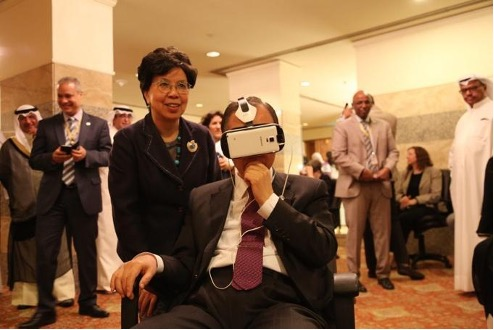
As a recent example advocacy and activism and the use of immersive storytelling to brief decision makers, in April 2022, the United Nations Department of Political and Peacebuilding Affairs (UN DPPA), together with the Government of Japan, released the VR experience “Sea of Islands” that takes viewers to the Pacific islands, allowing them to witness the profound ramifications of the climate crisis in the Asia Pacific area. Through this medium, the urgency, magnitude, and critical nature of climate change become tangible and accessible.
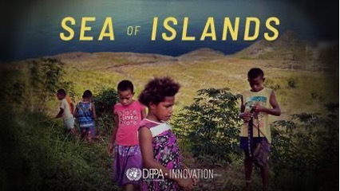
AR/VR technologies hold great promise in the field of educational technology (“edtech”) due to their immersive capabilities, engaging demeanor, and potential to democratize access and address issues such as cost and distance (Dick, 2021a). AR/VR can play a crucial role in facilitating the understanding of abstract concepts and enable hands-on practice within safe virtual environments, particularly benefiting STEM courses, medical simulations, arts, and humanities studies. Additionally, by incorporating gamified, hands-on learning approaches across various subjects, these technologies enhance cognitive development and classroom engagement. Another advantage is their capacity to offer personalized learning experiences, benefiting all students, including those with cognitive and learning disabilities. An illustrative instance is Floreo, which employs VR-based lessons to impart social and life skills to young individuals with autism spectrum disorder (ASD). The United Nations Children’s Fund (UNICEF) has a series of initiatives under its AR/VR for Good Initiative. For example, Nigerian start-up Imisi 3D, founded by Judith Okonkwo, aims to use VR in the classroom. Imisi 3D’s solution promises to provide quality education tools through VR, enrich the learning experiences of children, and make education accessible to more people.
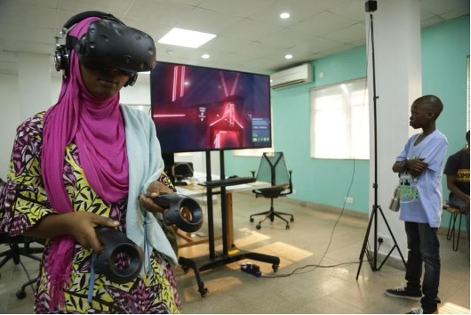
A number of projects have turned to VR to highlight the plight of refugees and those affected by war. One of UN VR’s first documentaries, released in 2015, is Clouds Over Sidra, the story of a 12-year-old girl Sidra who has lived in Zaʿatari Refugee Camp since the summer of 2013. The storyline follows Sidra around the Zaʿatari Camp, where approximately 80,000 Syrians, approximately half of them children, have taken refuge from conflict and turmoil. Through the VR film, Sidra takes audiences on a journey through her daily existence, providing insights into activities such as eating, sleeping, learning, and playing within the expansive desert landscape of tents. By plunging viewers into this world that would otherwise remain distant, the UN strives to offer existing donors a tangible glimpse into the impact of their contributions and, for potential donors, an understanding of the areas that still require substantial support.
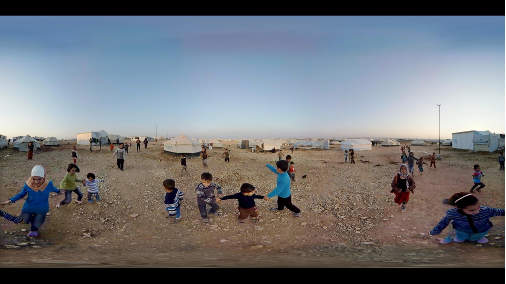
Another UN VR project, My Mother’s Wing, offers an unparalleled perspective of the war-torn Gaza Strip, presenting a firsthand account of a young mother’s journey as she grapples with the heart-wrenching loss of two of her children during the bombardment of the UNRWA school in July 2014. This poignant film sheds light on the blend of sorrow and hope that colors her daily existence, showcasing her pivotal role as a beacon of strength within her family. Amid the process of healing, she emerges as a pillar of support, nurturing a sense of optimism that empowers her family to persevere with renewed hope.
In various parts of the world, millions of adults struggle to read basic things such as bus schedules or bank forms. To rectify this situation, AR technology can be used with phone cameras to help people who struggle with reading. As an example, Google Lens offers support for translation and can read the text out loud when pointed at the text. It highlights the words as they are spoken, so that it becomes possible to follow along and understand the full context. One can also tap on a specific word to search for it and learn its definition. Google Lens is designed to work not only with expensive smartphones but also with cheap phones equipped with cameras.
Another example AR app “IKEA Place” shows the power of AR-driven spatial design and consumer engagement. The app employs AR technology to allow users to virtually integrate furniture products into their living spaces, enhancing decision-making processes, and elevating customer satisfaction. Such AR technology can also be applied in the realm of civic planning. By providing an authentic representation of products in real-world environments, the app can aid urban planners and architects in simulating various design elements within public spaces, contributing to informed decision-making for cityscapes and communal areas.
More examples of how AR/VR technology can be used to enhance accessibility are noted in Dick (2021b).
The presence of women at the core of our democratic system marks a significant stride toward realizing both gender equality (SDG 5) and robust institutions (SDG 16). The VR film titled “Compliment,” created by Lucy Bonner, a graduate student at Parsons School of Design, aimed to draw attention to harassment and discrimination endured by women in unsafe environments, which regrettably remains a global issue. Through this VR movie, viewers can step into the shoes of a woman navigating the streets, gaining a firsthand perspective on the distressing spectrum of harassment that many women experience often on a daily basis.
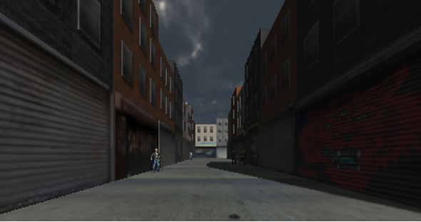
Source: http://lucymbonner.com/compliment.html
There are other forms of systemic discrimination including caste-based discrimination. A VR based film “Course to Question” produced by Novus Select in collaboration with UN Women and Vital Voices and supported by Google offers a glimpse into the struggles of activists combating caste-based discrimination. This movie highlights the plight of Dalit women who continue to occupy the lowest rungs of caste, color, and gender hierarchies. Formerly known as “untouchables,” the Dalits are members of the lowest caste in India and are fighting back against systems of oppression. They are systematically deprived of fundamental human rights, including access to basic necessities like food, education, and fair labor.
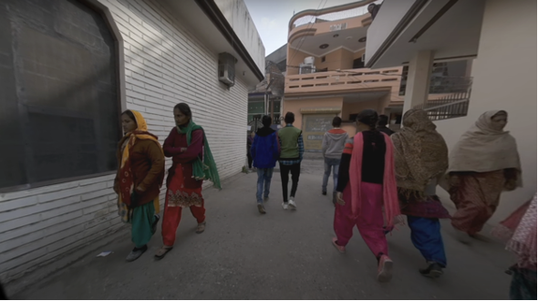
The UN Population Fund, formerly the UN Fund for Population Activities (UNFPA), pioneered a VR innovation in 2022 to improve maternal-health training, the first project to implement VR in Timor-Leste and possibly in the Asia-Pacific region. The VR program includes VR modules which contain Emergency Obstetric and Newborn Care (EmONC) skills and procedures to save the lives of mothers and babies using VR goggles. The aim of this project is to create digitally mediated learning environments in which real medical situations are visualized for trainees to boost learning experiences and outcomes and “refresh the skills of hundreds of trained doctors and midwives to help them save lives and avoid maternal deaths.”
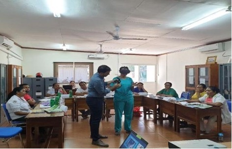
The immersive VR experience, “1000 Cut Journey,” takes participants on a profound exploration. They step into the shoes of Michael Sterling, a Black male, and traverse through pivotal moments of his life, gaining firsthand insight into the impact of racism. This journey guides participants through his experiences as a child facing disciplinary measures in the classroom, as an adolescent dealing with encounters with the police, and as a young adult grappling with workplace discrimination (Cogburn et al., 2018).
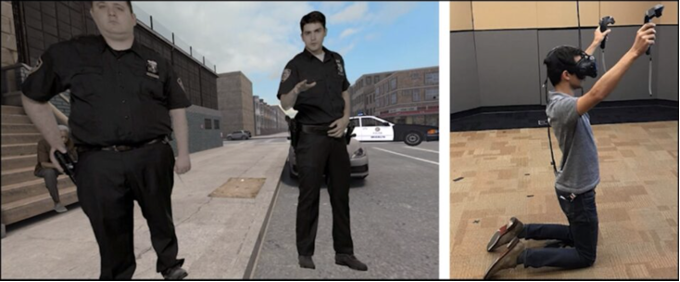
Source: https://www.virtualrealitymarketing.com/case-studies/1000-cut-journey/
1000 Cut Journey serves as a powerful tool to foster a significant shift in perspective. By immersing individuals in the narrative of Michael Sterling, it facilitates a deeper, more authentic engagement with the complex issues surrounding racism.
In another project from Stanford University’s Virtual Human Interaction Lab, one can experience firsthand the lives of indigent homeless people and walk in the shoes of those who can no longer afford a home inside a VR experience. Through this, the researchers aim to raise awareness and also study the effect of VR experiences on empathy. Researchers have uncovered through their research that a VR experience, compared to other perspective taking exercises, engenders longer-lasting behavior change.
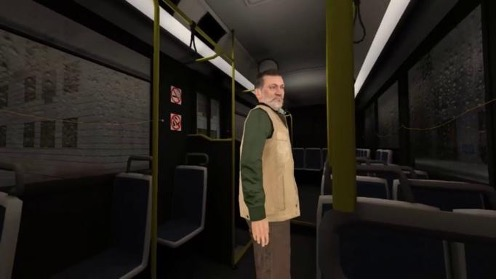
Source: https://xrgigs.com/offered/becoming-homeless-a-human-experience/
The MIT Media Lab and HafenCity University Hamburg teamed up to create CityScope, an innovative tool blending AI, algorithms, and human insight for participatory governance. This tool utilizes detailed data, including demographics and urban planning information, to encourage citizen involvement in addressing community issues and collective decision-making. It allows users to examine various scenarios, fostering informed dialogue and collaborative solutions. This project highlights how combining technology and human creativity can enhance citizen engagement in urban development.
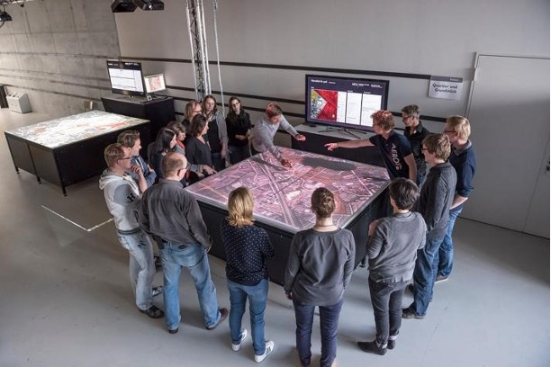
Another example is vTaiwan, an innovative approach to participatory governance, seamlessly bringing together government ministries, scholars, citizens, and business leaders to redefine modern democracy. This transformative process eliminates redundancy by converging online and offline consultations through platforms like vtaiwan.tw and using it for proposals, opinion gathering, reflection, and legislation. Taiwan has also used VR to highlight its response to the COVID-19 crisis through the VR film The Three Crucial Steps which showcases how three steps—prudent action, rapid response and early deployment—have played a critical role in Taiwan’s successful COVID-19 response.
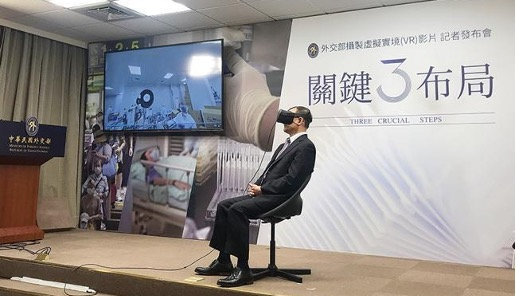
Source: https://topics.amcham.com.tw/2020/12/taiwan-new-trails-with-extended-reality/
Taiwan harnesses the power of open-source tools and advanced real-time systems such as Pol.is, which use statistical analysis and machine learning to decode the sentiments of its extensive user base (exceeding 200,000 participants) who can participate with immersive VR through the pioneering integration of 3D cameras in live-streamed dialogues. This evolutionary movement, born in 2014 and still ongoing, serves as a model of technology-enhanced 21st-century democratic governance.
VR holds significant potential for application in clinical settings, particularly for virtual therapy and rehabilitation, as noted by Rizzo et al. (2023). To exemplify the clinical utility of VR, consider the treatment if burn pain, which is often described by medical professionals as excruciating, frequently leading to patients susceptible to post-traumatic stress. For more than two decades, VR has provided a measure of solace to burn patients through innovative solutions like the VR game SnowWorld, developed by researchers from the University of Washington.
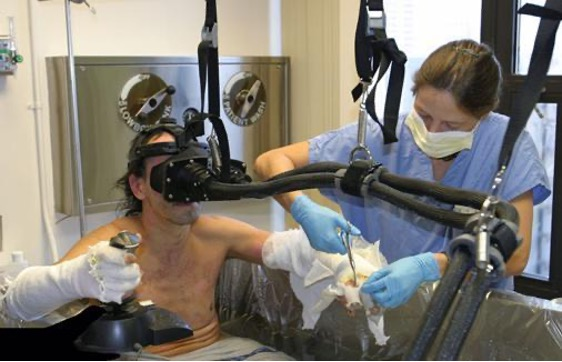
Photo and Copyright: Hunter G. Hoffman. Credit: University of Washington.
Source: https://depts.washington.edu/hplab/research/virtual-reality/
Throughout the process of the operative care of burn wounds, patients are made to immerse themselves in the SnowWorld VR experience. Remarkably, this immersive engagement has proven successful in either drowning out or mitigating the pain signals that afflict patients. The concept behind SnowWorld’s design revolves around the idea of snow, leveraging the stark contrast between cold and ice to counter the sensations of pain from the burn wounds. The intention is to divert patients’ thoughts away from their accidents or burn injuries. The effectiveness of VR in managing incoming pain highlights the great potential of AR/VR technology in clinical therapy and healthcare.
References
Find below the works cited in this resource.
- Aardema, F., et al. (2010). Virtual reality induces dissociation and lowers the sense of presence in objective reality. Cyberpsychology, Behavior, and Social Networking, 13(4), 429-435.
- Abe Streep, Crisis and Opportunity: How One VR Startup Is Capturing the 360-Degree Reality of the World’s Most Vulnerable People, WIRED (July 15, 2016).
- Augmented Democracy, article by César Hidalgo.
- Bailenson, J. (2018). Experience on demand: What virtual reality is, how it works, and what it can do. WW Norton & Company.
- Ball, M. (2022). The metaverse: and how it will revolutionize everything. Liveright Publishing.
- Brown, J., Bailenson, J., & Hancock, J. (2023). Misinformation in Virtual Reality. Journal of Online Trust and Safety, 1(5).
- Bolter, J. D., Engberg, M., & MacIntyre, B. (2021). Reality media: Augmented and virtual reality. MIT Press.
- Chalmers, D. J. (2022). Reality+: Virtual worlds and the problems of philosophy. Penguin UK.
- Cogburn, C.D., et al. (2018). 1000 cut journey. ACM SIGGRAPH 2018 Virtual, Augmented, and Mixed Reality.
- Dibbell, Julian. (2020). “A rape in cyberspace or how an evil clown, a Haitian trickster spirit, two wizards, and a cast of dozens turned a database into a society.”Annual Survey of American Law (1994): 471.
- Dick, E. (2021a). The promise of immersive learning: Augmented and virtual reality’s potential in education. Information Technology and Innovation Foundation.
- Dick, E. (2021b). Principles and Policies to Unlock the Potential of AR/VR for Equity and Inclusion. Information Technology and Innovation Foundation.
- ECNL, Access Now, and the Electronic Frontier Foundation (EFF) joint statement in response to European Commission consultation on ‘Virtual worlds (metaverses) – a vision for openness, safety and respect.’
- Experiencing Racism in VR | Courtney D. Cogburn, PhD | TEDxRVA.
- Frischmann, B., & Selinger, E. (2018). Re-engineering humanity. Cambridge University Press.
- Garcia-Palacios, A., et al. (2002). Virtual reality in the treatment of spider phobia: a controlled study.Behaviour research and therapy, 40(9), 983–993.
- Greengard, S. (2019). Virtual reality. MIT Press.
- Gudowsky, N., Kowalski, J., & Bork-Hüffer, T. (2023). Augmented futures? Scenarios and implications of augmented reality use in public spaces.Futures, 103193.
- Hoffman, H. G., et al. (2011). Virtual reality as an adjunctive non-pharmacologic analgesic for acute burn pain during medical procedures.Annals of behavioral medicine, 41(2), 183-191.
- Diamandis, P. H., & Kotler, S. (2020). The future is faster than you think: How converging technologies are transforming business, industries, and our lives. Simon & Schuster.
- Jane McGonigal, Gaming Can Make A Better World (TED Talk).
- Johnson, S. (2006). Everything bad is good for you: How today’s popular culture is actually making us smarter. Penguin.
- Kaushik, A. (2020). XR for Social Impact: A Landscape Review. Games for Change.
- Lanier, J. (2017). Dawn of the new everything: A journey through virtual reality. Random House.
- Lindner, P. (2021). Better, virtually: the past, present, and future of virtual reality cognitive behavior therapy.International Journal of Cognitive Therapy, 14(1), 23-46.
- Madary, M., & T. Metzinger (2016). Real virtuality: A code of ethical conduct: Recommendations for good scientific practice and the consumers of VR technology. Frontiers in Robotics and AI.
- Marr, B. (2021). Extended reality in practice: 100+ amazing ways virtual, augmented and mixed reality are changing business and Society. John Wiley & Sons.
- McGonigal, J. (2011). Reality Is Broken: Why Games Make Us Better and How They Can Change the World. New York: Penguin Books.
- Milgram, P., & Kishino, F. (1994). A taxonomy of mixed reality visual displays. IEICE Transactions on Information and Systems, 77(12), 1321-1329.
- Nelson, H. G., & Stolterman, E. (2014). The design way: Intentional change in an unpredictable world. MIT Press.
- Pahi, S., & Schroeder, C. (2023). Extended Privacy for Extended Reality: XR Technology Has 99 Problems and Privacy is Several of Them. Notre Dame Journal on Emerging Technologies. Volume 4, Issue 1.
- Pariser, E. (2011). The filter bubble: How the new personalized web is changing what we read and how we think. Penguin.
- Postman, N. (2011). Technopoly: The surrender of culture to technology. Vintage.
- Reeves, B., & Nass, C. (1996). The media equation: How people treat computers, television, and new media like real people. Cambridge, UK, 10(10).
- Rizzo, A., Koenig, S., & Lange, B. (2023). Clinical virtual reality: The state of the science. In G. G. Brown, B. Crosson, K. Y. Haaland, & T. Z. King (Eds.), APA handbook of neuropsychology, Vol. 2. Neuroscience and neuromethods (pp. 473–491). American Psychological Association.
- Rosenberg, L. (2022). Regulation of the Metaverse: A Roadmap: The risks and regulatory solutions for largescale consumer platforms. In Proceedings of the 6th international conference on virtual and augmented reality simulations (pp. 21-26).
- Rosenberg, L. B. (2023). The Metaverse: The Ultimate Tool of Persuasion. In Metaverse Applications for New Business Models and Disruptive Innovation(pp. 1-11). IGI Global.
- Schüll, N. D. (2012). Addiction by design. In Addiction by design. Princeton University Press.
- Spiegel, J. S. (2018). The ethics of virtual reality technology: Social hazards and public policy recommendations.Science and engineering ethics, 24(5), 1537-1550.
- Stephenson, N. (2003). Snow crash: A novel. Spectra.
- The IEEE Global Initiative on Ethics of Extended Reality.
- Turkle, S. (1996). Virtuality and its discontents searching for community in cyberspace. The wired homestead: An MIT press sourcebook on the internet and the family, 385-402.
- Toyama, K. (2015). Geek heresy: Rescuing social change from the cult of technology. PublicAffairs.
- UNICEF Rapid Analysis, “The Metaverse, Extended Reality and Children.“
- Virtual reality film series: Women human rights activists (UN Women)
- Weinstein, J., Reich, R., & Sahami, M. (2021). System error: Where big tech went wrong and how we can reboot. Hachette UK.
- World Bank Group. (2014). World Development Report 2014: Risk and Opportunity—Managing Risk for Development.
- World Bank Group. (2017). World Development Report 2017: Governance and the Law. World Bank Publications.
- World Bank. (2021). World Development Report 2021: Data for better lives.
Additional Resources
- Dick, E. (2021). Public policy for the metaverse: Key takeaways from the 2021 AR/VR policy conference. Information Technology and Innovation Foundation.
- Dick, E. (2021). Risks and challenges for inclusive and equitable immersive experiences. Information Technology and Innovation Foundation.
- Huynh-The, T., et al. (2023). Artificial intelligence for the metaverse: A survey. Engineering Applications of Artificial Intelligence, 117, 105581.
- Ionescu, A., et al. (2021). 360 videos for immersive mental health interventions: A systematic review. Journal of Technology in Behavioral Science, 6(4), 631-651.
- Ning, H., et al. (2023). A Survey on the Metaverse: The State-of-the-Art, Technologies, Applications, and Challenges. IEEE Internet of Things Journal.
- Wang, Y., et al. (2022). A survey on metaverse: Fundamentals, security, and privacy. IEEE Communications Surveys & Tutorials.
- Qayyum, A., et al. (2022). Secure and trustworthy artificial intelligence-extended reality (AI-XR) for metaverses. ACM Computing Surveys.
Related Technologies & Trends
Technologies & Trends


Principles for Digital Development
- Design with the User
- Understand the Existing Ecosystem
- Design for Scale
- Be Data Driven
- Use Open Standards, Open data, Open Source, and Open Innovation
- Address Privacy and Security